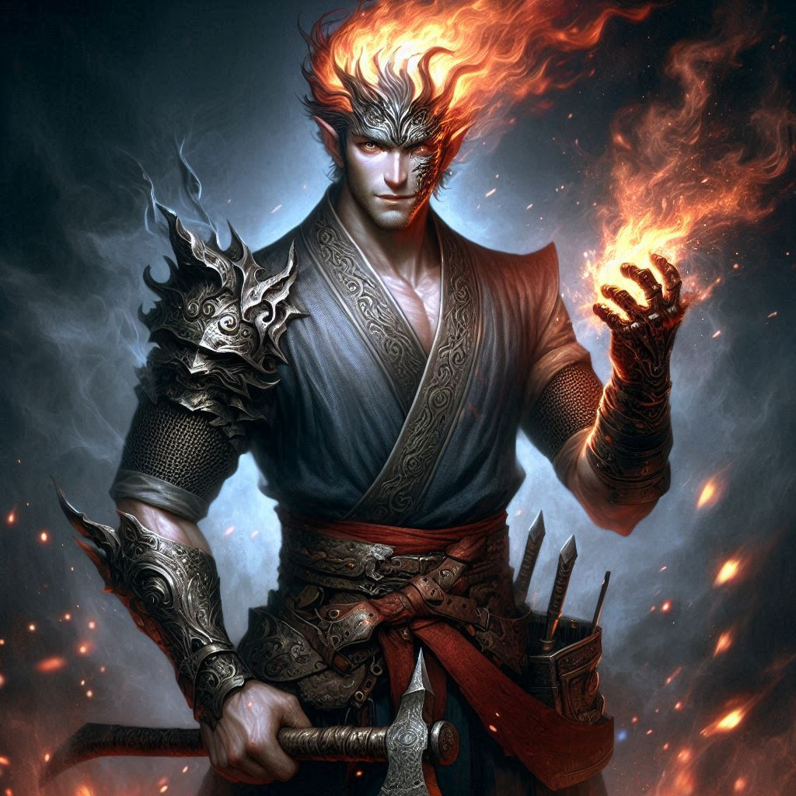

Shadows of Calverak
Menu ▼
Guards
Gnawbone Syndicate
Cinderhands
Veiled Mirror

Gorrum Cinderskull
Rank: Ashen Tyrant
Scarred fire genasi leader of the Cinderhands.
Abilities:
His burned body feels no pain.
His heated iron fists sear flesh on contact.
He inspires his followers with fanatical devotion.